Outreach Activities
Majestic and Microscopic Discovery – Community Engagement with Tasek Jurong Limited
What can we find in Singapore’s waters?
Plankton is a diverse group of organisms that drift with the ocean current. They are key primary producers in the sea and major food sources for many marine animals such as whale sharks, but are frequently neglected due to their microscopic size.
To raise awareness of their existence and importance, on 5 December 2016, the International SeaKeepers Society, Asia partnered researchers from the National University of Singapore to bring 15 children from the Girls Club and Gift of Music Group of Tasek Jurong Limited on an experiential learning journey. Julian Chang , International SeaKeepers Society Board Member, organized this floating classroom session on board the Asean Lady, which is part of the Society’s fleet of Discovery Yacht members.
Dr Toh Tai Chong from the Tropical Marine Science Institute, first introduced Singapore’s marine biodiversity and the impacts on Singapore’s reefs. To help the students relate better to the habitat, they had a feel of the corals’ calcium carbonate skeletons for their first time. Dr Toh then highlighted the existence of plankton and tips to viewing them. Intrigued and equipped with the basic knowledge, the students excitedly gathered these organisms using plankton nets around Raffles Marina.
Back on the yacht, the students were guided by Dr Toh’s team to view the plankton under the microscopes. Searching for the minute plankton in droplets of seawater was like a mini treasure hunt! The students were also taught how to observe and differentiate between phytoplankton and zooplankton.
Before disembarking, the students toured the majestic ASEAN Lady and enjoyed a lovely tea break with the organisers and partners of the event.
The students remarked that this was an interesting and meaningful experience. It helped them to learn more about the sea and marine life and they enjoyed “fishing for plankton” the most.
It was indeed a fruitful experience and the students realized that even though plankton is tiny, their immense value provides compelling reasons for exploring and understanding for everyone.
|
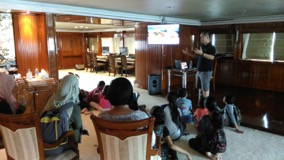 Dr Toh Tai Chong sharing passionately about Singapore’s marine biodiversity to the students from Tasek Jurong Ltd. |
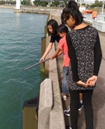 Students using plankton nets around Raffles Marina. |
|
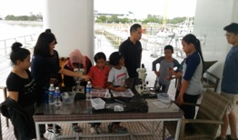 Students learning how to use the microscopes. |
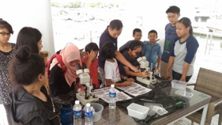 Treasure (plankton) hunting using microscopes. |
|
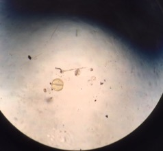 Treasure found! A phytoplankton! |
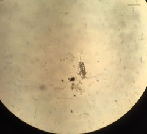 Another treasure found! A zooplankton! |
|
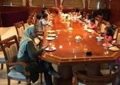 Enjoying a rewarding tea break. |
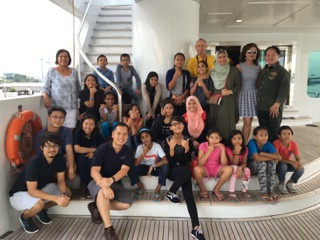 A group photo onboard the majestic ASEAN Lady. |
Back to top
Community-Based Reef Rehabilitation in the Coral Triangle
Located at the periphery of the Coral Triangle, coral reefs of Les Village in northern Bali house a multitude of marine life as well as provide ecosystem services and goods to villagers. However, the practice of destructive cyanide fishing for the ornamental fish trade since the early 1980s has led to overfishing and degradation of the reefs (Youtube: The Story of Les - Reef Rehabilitation). The introduction of environmentally friendly net method to replace cyanide fishing in 2000 remained insufficient to promote reef recovery. Community-based reef rehabilitation involving coral transplantation was then initiated to enhance live coral cover and fish abundance at the damaged reefs.
With the belief that seaside communities can improve their livelihood by conserving the oceans and the environment, Sea Communities (https://www.seacommunities.com), an NGO was founded in collaboration with Les fisherfolk association in 2012. Several reef rehabilitation initiatives were introduced and facilitated that offered the locals alternative income through "voluntourism".
Sea Communities contacted Prof. Chou Loke Ming from the Tropical Marine Science Institute, National University of Singapore, who agreed to provide expertise that can help enhance the reef rehabilitation initiative. Two members of his research team, Mr. Lutfi Afiq Rosli and Mr. Daisuke Taira, were invited to Les Village in 2015 and 2016. The researchers provided scientific advice and established monitoring protocols for coral and fish communities. They also ran an annual 5-day training (Scientific Trial Active Reef Rehabilitation expedition: STARR) for local fishermen and dive volunteers. During the training, fishermen and volunteers learnt about reef survey methods and reef rehabilitation techniques in conjunction with identifying corals and reef fishes. Under the researchers’ guidance, they dived to transplant corals and monitor coral health as well as conduct coral reef and fish surveys. The training helped to equip local fishermen with necessary skills for reef surveys and rehabilitation techniques while allowing the volunteers to experience and contribute to sustainable management of natural resources (Youtube: Sea Communities: Conservation | Culture | Community).
|
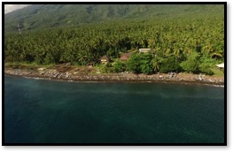 An aerial view off the coast of Les Village, Bali. (Photo credit: C’est La Vie Films Australia). |
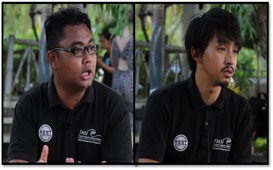 Lutfi (left) and Daisuke (right), TMSI research staff involved with the project. (Photo credit: C’est La Vie Films Australia). |
|
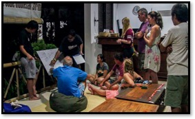 Night briefing on coral transplantation. (Photo credit: C’est La Vie Films Australia). |
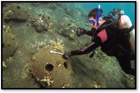 A volunteer assisting in monitoring coral growth. |
|
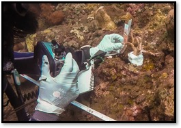 Daisuke taking a picture of a coral transplant. (Photo credit: C’est La Vie Films Australia). |
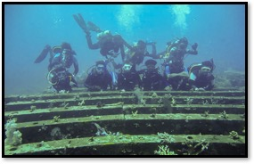 Group photo of STARR 2015 (Photo credit: Sea Communities) |
Back to top
Discover Marine Science Onboard a “Floating” Classroom
Who would have imagined having a science lesson on a motor yacht?
On 27 July 2016, students from Deyi Secondary School had the opportunity to embark on a marine science learning expedition onboard the yacht D/Y Lady Jo. Through an initiative by SeaKeepers Asia and the collaboration between DISCOVERY Yacht members David and Jo Haines, along with National University of Singapore researchers, D/Y Lady Jo was transformed instantly into a “floating” classroom.
Onboard the yacht, Dr Toh Tai Chong and Ms Sam Shu Qin from the Tropical Marine Science Institute, NUS, shared their knowledge on Singapore’s marine biodiversity and the effects of Singapore’s changing coastline. The informative session sparked students’ curiosity towards marine conservation as the students swarmed them with questions.
After the lecture, the students surveyed the planktonic biodiversity around the marina at Republic of Singapore Yacht Club. Using plankton nets, the students collected water samples from the marina and examined the samples on board the yacht. Under the microscope, they discovered a fascinating range of marine critters living in our waters, such as flat worms, shrimps, fish eggs and even crab and snail larvae!
Under the researchers’ guidance, the students learnt to identify different groups of marine planktonic organisms. The students also did their part in protecting the ocean by cleaning up floating debris around the marina. Through this unique experience, students became more aware of local environmental issues while the stories shared by the Yacht owners and researchers inspired the students to contribute towards marine conservation.
|
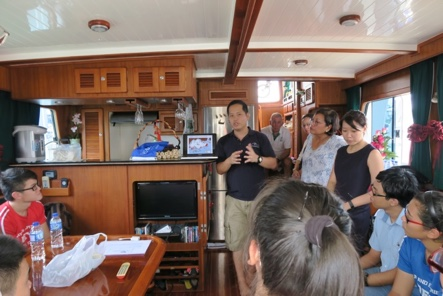 Dr Toh Tai Chong sharing his knowledge on Singapore’s marine biodiversity to Deyi Secondary School students. |
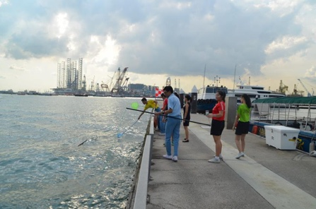 Students collecting water samples using plankton nets around the marina at Republic of Singapore Yacht Club (Photo credit: The International SeaKeepers Society). |
|
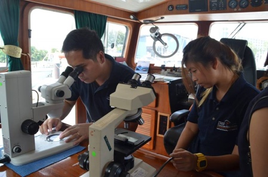 Setting up microscopes to examine the organisms from water samples collected by the students (Photo credit: The International SeaKeepers Society). |
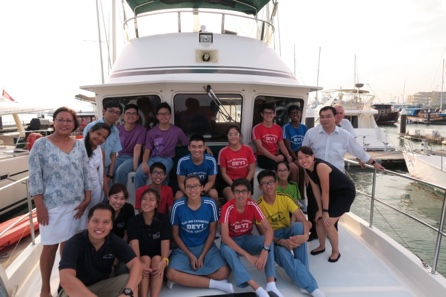 Group photo at the deck of elegant D/Y Lady Jo. |
Back to top